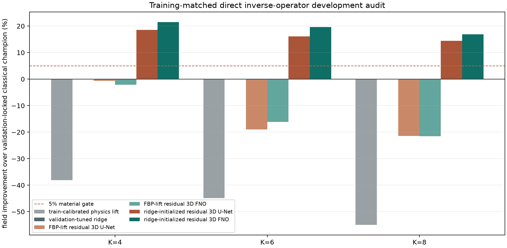
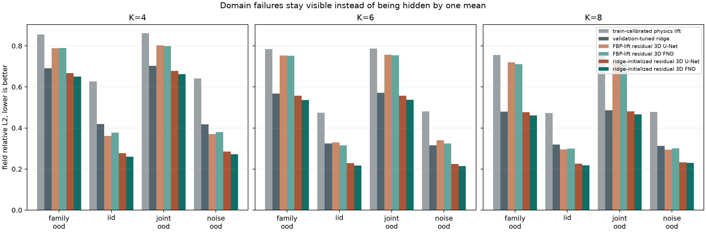

固定相机预算
K 个重建相机只产生 displacement / deflection 与 geometry；额外一个相机锁定为审计。
训练、早停、选 λ、选模型都看不到 Q_audit。从三维反问题基础、强数值基线和训练分布匹配开始，逐步走到自有几何条件化模型、NeRIF 物理细化与真实无真值验证。ridge-FNO 现已定位为必须击败的强基线；v3b 自有 ray-set 增强候选只有 K=6 通过开发门槛，尚未全面胜出。
carry continuation-Adam + restart cosine · 240 epochs 为 FNO 冠军；v3e 五架构成本 schema 已完成，并证明少量 trainable parameters 不等于低成本。geometry 为 Go 后可写功能 pilot；matched error–compute、确认性 superiority、blind final 和 NeRIF 仍暂缓。
K 个重建相机只产生 displacement / deflection 与 geometry；额外一个相机锁定为审计。
训练、早停、选 λ、选模型都看不到 Q_audit。先用 ridge，后续升级 CGLS/TV 或 RBF direct，得到稳定但可能过平滑的粗场。
这一步是当前正结果成立的前提。冻结 240-epoch FNO 冠军、plateaued control 和 v3e 成本 schema；geometry 为 Go 后写功能 pilot并补 matched learning curves。
允许实现，不允许确认性 superiority。仅当 v3d 开发门槛通过，再以 Interp(x0)+zero-init residual MLP 比较总时间、最终质量和失败率。
每项都留下一个可检查产物；读完不算完成，能推导、能运行、能解释才算。
从 min ||Ax-y||² + λ||x||² 推到 Aᵀ(AAᵀ+λI)⁻¹y，解释小奇异值为什么放大噪声。
确认 Q_audit=60° 不进输入、训练、早停和 ridge 选择；理解 reconstruction budget K 与 installed cameras K+1。
产物：终端截图/日志 + 你自己的三句话解释。沿着 15 通道输入、3D spectral mixing、ridge skip 到体场输出画数据流；不背网络名词。
产物：一张 shape diagram + 参数量核对。只抽坐标输入、折射率输出、ray sampling、gradient/deflection、loss 和 stopping rule。
产物：一张 forward-loss 卡；不先追所有实验细节。random NeRIF、ridge→NeRIF、ridge-FNO→NeRIF、oracle low-pass→NeRIF 使用同一网络、K、optimizer 和 stopping rule。
产物：冻结的实验矩阵与计时边界。优先拿到输入输出定义、最小 geometry/data、组内 NeRIF baseline 和无真值主指标。
产物：师兄回复摘要 + 数据合同，不急着承诺题名。不同时开 DeepONet、Transformer、4D 和 UQ。一个闸门不过，就缩题而不是堆模型。
锁输入是 raw image、displacement 还是 projection；输出是 n、ρ、T 还是 ∇n；锁 K、geometry 与主指标。
闸门：何远哲确认最小数据和 NeRIF forward/loss。复现一个场，记录 random init 的 loss、Q_val、Q_audit 与 wall time 曲线。
不过：降为 NeRIF 复现与误差分析毕设。补 cone-ray、有限孔径或至少不同离散化；做单位、坐标、ray 与 gradient tests。
目的：避免训练和测试共用同一个简化 forward 的 inverse crime。CGLS/TV、RBF/ridge、random NeRIF、compact NRIP-style INR；锁 final manifest。
不过：只做 synthetic benchmark，不承诺真实论文。一次性运行 ridge-FNO 与 matched U-Net/FNO；不回看 final fields 调参。
闸门：三预算至少 2/3 风险门槛通过。thin front、双峰、geometry drift、光流偏差、缺失相机和最大角间隙。
不过：停 operator 创新，改做 OOD 边界研究。LoRA、vanilla adapter、F-Adapter、last-block 与 acquisition-conditioned 分支从同一收敛 checkpoint 出发。
必须同时报告参数、墙钟、收敛曲线、逐域 CI、p10 与 harm。只在 dev2 选秩、调制位置和正则；geometry 分支必须胜 plain/control。
不过：停止自有结构主张；通过后才冻结协议并讨论 NeRIF。displacement、内外参、ray table、mask、单位与独立相机角色逐项核对。
禁止用 Q_audit 选迭代数或模型。LOCO、独立重复采集、残差空间结构与 PLIF/front/PIV/积分 trace。
没有独立物理 trace：只声称跨视角一致，不声称真实 3D 准确。三种子、field/run cluster bootstrap、训练成本、摊销盈亏点、尾部失败。
闸门由预注册指标决定，不用最好看的 case 决定。方法图、相机预算、强基线、时间曲线、OOD、风险、真实审计和失败案例。
冻结模型，不再增加网络家族。百分比均相对 validation-locked classical champion；本实验三个预算的 champion 都是非负 ridge。
正在读取校验后的 v3a 数据...
当前最弱边界是 K=8 thin-front family OOD，平均改善仅约 4.08%。总体 gate 通过不等于每一个域都超过 5%。


training/evaluation mask 匹配；每 K 独立训练；3 seeds；96 fields；p10 和 harm gate；Q_audit 同时改善。
真实 ray geometry、全新 blind fields、CGLS/TV/RBF、NeRIF 总时间、可变布局、真实重复采集。
数值逆解先恢复可观测稳定分量，FNO 学习低幅先验修正；弱 FBP lift 迫使网络重猜全场并在 OOD 崩溃。
不能写“FNO 优于传统法”“跨 family 已解决”“NeRIF 已加速”或“真实三维场准确”。
先抽方法合同和失败边界，再读网络细节。以下链接均指向作者、出版社或正式会议页面。
抽 continuous refractive-index field、BOST forward/loss、ray sampling、实验验证。
不能支持：跨样本算子或 learned warm-start。抽 gradient field、5–180 camera study、nonlinear ray synthetic 与 hierarchical sampling。
不能支持：预训练 direct operator。抽 hash/Fourier、discrete gradient、3D mask 和真实双火焰非物理饱和失败。
本地术语导读；公开代码无明确 LICENSE，不直接搬运。抽 projection sequence、3D reconstruction、真实 candle flame 和留出相机。
不能支持：固定有序 GRU 自动等于 neural operator。理解 inverse map、DeepONet/FNO 组合和传感器/噪声鲁棒性实验。
不能支持：其 operator-to-function 输入等同 BOST camera stack。抽 meta-initialization、time-to-quality 和 partial observation 下的泛化。
不能支持：measurement-conditioned BOST 初始化。抽 shared encoder layers 作为新 INR 初始化，以及 in/OOD fitting。
不能外推：图像早期 10 dB 收益直接变成 NeRIF 加速。抽传感器数量/位置变化、排列不变聚合和 sensor coordinate encoding。
不能支持：只有 PDE 实验就足以证明 BOST 有效。抽 arbitrary geometry、coordinate neural fields 与 latent modulation。
不能支持：已完成投影反演或 NeRIF warm-start。理解 INR 的 operator-theoretic reformulation 和 integral transform。
不能写成“operator 自动生成 NeRIF 权重”。displacement→3D field，还是 3D history→future field？
最终锁 refractive index、density、temperature 还是 gradient field？
能否提供 NeRIF forward、loss、calibration、mask 与一例数据？
更接受初始化体场、调制 shared NeRIF，还是生成全部权重？
有多少 CFD/phantom 工况？相邻帧和同一 case 如何分组？
是否有 raw image、displacement、内外参、ray table、mask 和重复采集？
论文是否必须支持角度变化、不同设备或缺失相机？
组内最认可 held-out camera、PLIF/front、PIV compensation 还是积分量？
是否同意 CGLS/TV、RBF、GRU-BOST、NeRIF 以及 NeDF/NRIP 对照？
能否先批准两周审计，并在第 2/6/8/10 周明确继续或降级？
构造 A_S h ≈ 0 但 A_Q h ≠ 0 的 thin-front/双峰扰动。若 warm-start 更快拟合 used views，却让 Q_audit 更差，路线失败。
BOST 几何条件化 + 强数值起点 + zero-residual NeRIF + 固定预算 + OOD/独立审计。单纯“FNO 接 MLP”不够。
若真实数据或 NeRIF 接口拿不到，保留 v2d/v3a 为“强数值与神经先验的 OOD 边界”严谨 benchmark。
至少两个未见 family、两个 geometry/noise OOD、两个真实工况、独立重复采集和端到端成本。